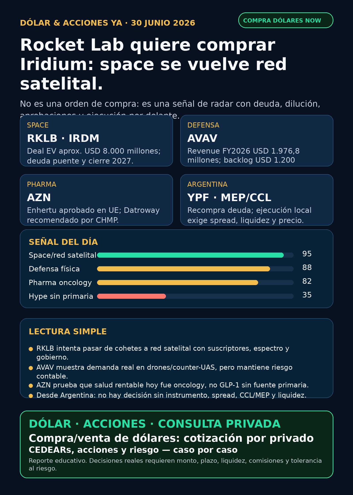

Rocket Lab quiere comprar Iridium: space se vuelve red satelital.
Reporte educativo para Argentina: qué señales mirar, qué riesgos no comprar con los ojos cerrados y qué instrumento falta verificar antes de operar.
Texto WhatsApp
Placa del día

Dólar & Acciones YA — 30/06
Lectura simple del día
La señal fuerte de hoy viene de space + defensa física + pharma real, no del típico titular de “AI software”. Rocket Lab anunció un acuerdo para comprar Iridium: si se aprueba, RKLB deja de ser sólo “cohetes chicos” y suma una red satelital global con espectro, suscriptores, PNT, IoT y contratos gobierno/defensa. En criollo: no es sólo lanzar satélites; es intentar quedarse con una autopista espacial completa.
También hubo recibo concreto en defensa: AeroVironment mostró revenue, bookings y backlog fuertes. Y en salud, AstraZeneca tuvo señales regulatorias reales en oncología. Para Argentina, YPF dejó una señal de manejo de deuda, pero eso no reemplaza la pregunta operativa: precio, liquidez, spread, comisiones, MEP/CCL e instrumento.
Esto es research educativo. No es orden de compra ni venta.
Tesis central
La inversión en tecnología se está volviendo cada vez más física. AI, space y defensa dependen de redes, satélites, electricidad, fábricas, espectro, financiamiento, permisos y contratos. El moat ya no es sólo “modelo de AI” o “software”: también es infraestructura difícil de replicar.
Para un lector en Argentina, separo cuatro cosas que no son lo mismo:
- Buena empresa: negocio fuerte, moat, caja, crecimiento y ejecución.
- Buena inversión al precio actual: valuación y margen de seguridad.
- Buen instrumento: acción, CEDEAR, ETF, bono, fondo cerrado, wrapper o broker global.
- Buena ejecución local: liquidez, spread, comisiones, CCL/MEP implícito, impuestos y tamaño de posición.
Señales educativas del día — no ranking de compra
1) RKLB + IRDM — Rocket Lab quiere comprar Iridium
- Señal: Rocket Lab anunció acuerdo definitivo para adquirir Iridium por USD 54 por acción de IRDM, mitad cash y mitad acciones de Rocket Lab bajo un exchange ratio con collar. Enterprise value aproximado: USD 8.000 millones. Cierre esperado: mid-2027, sujeto a aprobación de accionistas de Iridium, registro S-4, antitrust, FCC, telecom/satélite y foreign investment. Bridge debt comprometido: USD 3.600 millones.
- Fuente: https://www.sec.gov/Archives/edgar/data/1819994/000175392626001085/g085783_ex99-1.htm
- Fuente presentación: https://www.sec.gov/Archives/edgar/data/1819994/000175392626001085/g085783_ex99-2.htm
- Lectura en criollo: RKLB intenta pasar de launch + space systems a una plataforma con red satelital, espectro y revenue recurrente. Si funciona, la tesis se hace más grande. Si sale mal, la deuda, integración y aprobaciones pueden pesar mucho.
- Accionable internacional/global: seguimiento para análisis humano, no compra automática.
- Accionable local Argentina: acceso/CEDEAR/spread/liquidez no verificados para ejecución.
- Riesgo: deuda, dilución, integración, aprobación regulatoria, timing hasta 2027 y reacción de mercado.
2) AVAV — defensa física con números, no sólo hype de drones
- Señal: AeroVironment reportó Q4 FY2026 revenue USD 641,6 millones; revenue FY2026 USD 1.976,8 millones (+141% YoY); bookings USD 2.700 millones; book-to-bill 1,4; funded backlog USD 1.200 millones. Guía FY2027: revenue USD 2.125–2.225 millones, adjusted EBITDA USD 305–325 millones, adjusted diluted EPS USD 3,02–3,34.
- Fuente resultados: https://www.sec.gov/Archives/edgar/data/1368622/000110465926078824/avav-20260629xex99d1.htm
- Fuente 10-K/riesgos: https://www.sec.gov/Archives/edgar/data/1368622/000110465926078906/avav-20260430x10k.htm
- Lectura en criollo: defensa/guerra física es un carril real: drones, loitering munitions, counter-UAS, directed energy, space/cyber y BlueHalo. Pero no alcanza con “hay guerra”: hay que mirar backlog, márgenes, dependencia DoD, supply chain e integración.
- Estado: señal fortalecida / vigilar riesgo contable e integración.
- Accionable local Argentina: no asumir instrumento local; puede requerir broker global o ETF defensivo a verificar.
- Riesgo: material weaknesses heredadas de BlueHalo, integración, concentración gobierno/DoD, alto beta y valuación.
3) AZN — pharma hoy fue oncología, no GLP-1
- Señal 1: AstraZeneca/Daiichi Sankyo informaron aprobación europea de Enhertu como primera terapia HER2-directed tumor-agnostic para adultos con tumores sólidos HER2+ previamente tratados y sin opciones satisfactorias.
- Fuente Enhertu: https://www.sec.gov/Archives/edgar/data/901832/000165495426006251/a1370k.htm
- Señal 2: Datroway recibió recomendación positiva de CHMP para metastatic triple-negative breast cancer 1L en pacientes no candidatos a immunotherapy. Ojo: recomendación CHMP no es todavía aprobación final de la European Commission.
- Fuente Datroway: https://www.sec.gov/Archives/edgar/data/901832/000165495426006239/a0148k.htm
- Lectura en criollo: salud no es sólo Ozempic/GLP-1. Oncology de precisión puede sostener pricing, pipeline y moat si los labels se expanden con reguladores.
- Accionable internacional/global: AZN en seguimiento para análisis humano.
- Accionable local Argentina: ADR/CEDEAR/acceso y liquidez a verificar.
- Riesgo: aprobación final, competencia, pricing/regulación, resultados comerciales y dependencia de pipeline.
4) YPF — señal local de deuda, no de producción
- Señal: YPF informó recompra de Class XXX Notes (YMCWO) entre el 22 y el 26 de junio por Ps.16.439.915.799,42, equivalente a par value USD 11.144.664, a precio promedio 99,97% del nominal.
- Fuente: https://www.sec.gov/Archives/edgar/data/904851/000155485526001453/MainDocument.htm
- Lectura en criollo: es manejo de deuda/capital, no prueba directa de más producción ni de Vaca Muerta. Igual importa porque muestra actividad financiera de la principal energética argentina.
- Accionable local Argentina: instrumento local directo, pero ejecución real exige precio vivo, MEP/CCL, spread, liquidez, comisiones y tamaño.
- Riesgo: Argentina macro, regulación, deuda, tipo de cambio, política energética y volatilidad local.
5) NVO — recompra, no aprobación clínica nueva
- Señal: Novo Nordisk actualizó su programa de recompra: hasta DKK 15.000 millones en 12 meses desde febrero; al 26 de junio acumulaba 22.009.179 B shares recompradas por DKK 5.898.848.910.
- Fuente: https://www.sec.gov/Archives/edgar/data/353278/000117184326004353/f6k_062926.htm
- Lectura: soporte de capital allocation. No venderlo como catalizador clínico ni como aprobación de una droga.
- Riesgo: competencia GLP-1, pricing, regulación y ejecución comercial.
Watchlist base — cobertura explícita
- RKLB: señal mayor por adquisición propuesta de Iridium. Fortalece tesis space applications/revenue recurrente, con más deuda, dilución e integración.
- NVDA: sin fuente primaria nueva fuerte esta noche. Tesis AI infra sigue vigente por semis, memoria, networking y cooling, pero no inventar titular.
- PLTR: aparecieron notas secundarias sobre “Palantir + Nvidia”, sin fuente primaria/filing verificado. No elevar como deal.
- TSM: sin señal nueva posterior al 6-K de capital appropriations USD 21.013 millones ya indexado el 29/06. Foundry/capex sigue estructural.
- MU: sin filing nuevo posterior al 10-Q ya indexado. HBM/memoria sigue como peaje físico AI.
- GOOGL/GOOG: sin señal primaria nueva fuerte; estructural por cloud/TPU/data centers.
- AAPL: sin señal fuerte nueva.
- HOOD: 8-K de principal accounting officer y convertibles siguen vigentes; vigilar capital, controles y agentic trading previamente indexado.
- TSLA: autonomy/robotaxi revisado, sin fuente primaria nueva fuerte para elevar.
- ASML: moat EUV/High-NA estructural, sin evento fresco.
- Gold / GLD / GOLD / B: instrumento ambiguo. No hablar de oro/Barrick/ETF hasta confirmar qué activo es.
- RVI: sin NAV/holdings fresco. Fondo/instrumento cerrado, no operating company.
- SPCX / SpaceX: sin filing nuevo posterior a senior notes ya indexadas. Radar alto educativo, no accionable local automático.
- CBRS / Cerebras: sin filing nuevo posterior a resultados/OpenAI-AWS. Radar alto con concentración de clientes y acceso a verificar.
- AVGO/QCOM: QCOM sigue en radar por Modular; AVGO sin señal nueva fuerte.
Energía, grid, transformadores y power hardware
El carril de energía sigue arriba porque el segundo peaje de AI es electricidad física: transformadores, subestaciones, switchgear, transmisión, generación, cooling y permisos.
- GEV / GE Vernova: proxy público limpio de electrification/data-center power; sin filing nuevo esta noche, pero tesis estructural vigente.
- Hitachi Energy / Hitachi (
6501.T,HTHIY): radar por grid y power semiconductors; acceso Argentina pendiente. - Siemens Energy (
ENR.DE): revisar como Siemens Energy, no confundir con Siemens AG. - HD Hyundai Electric (
267260.KS) y Hyosung Heavy Industries/HICO (298040.KS): radar por breakers, switchgear y transformadores para data centers; acceso Corea/OTC/Argentina pendiente. - Virginia Transformer y Delta Star: privadas/no accionables directo; sirven para entender bottleneck industrial.
- Argentina energía: YPF tuvo señal de recompra de notes. TGS, PAMP y CEPU revisadas sin señal primaria más fuerte. Mantener como capa educativa local.
- Nuclear/uranio: Cameco publicó Sustainability Report vía SEC 6-K; reafirma posición en uranium fuel/Westinghouse/GLE, pero no fue contrato ni guidance nuevo.
Pharma / salud
- AZN / oncology: doble señal regulatoria verificable por SEC 6-K.
- NVO / GLP-1: recompra verificada; no confundir con aprobación clínica.
- LLY / orforglipron / “Foundayo”: titulares secundarios siguen apareciendo, pero sin fuente primaria FDA/Lilly verificada. Estado: no publicar como aprobado.
- MRK/Astellas / Keytruda + Padcev: discovery secundario; falta fuente primaria company/EMA usable si se eleva.
- PFE/MRK/biotech M&A: revisado, sin señal primaria nueva fuerte.
Defensa, guerra física y aerospace industrial
- AVAV: señal fuerte por revenue, bookings, backlog y guía; riesgo contable/integración sigue.
- GE Aerospace: revisado; moat estructural por motores/aftermarket, sin filing/contrato nuevo fuerte para titular hoy.
- RTX, LMT, NOC, GD, HWM, KTOS, BA, ITA/XAR: revisados; sin señal primaria nueva más fuerte que AVAV/RKLB.
- Lectura: defensa real se mide por contratos, backlog, presupuesto, margen, supply chain e integración. No por titulares de guerra sueltos.
Autonomous mobility / physical AI
Tesla, Waymo/Alphabet, Uber, Zoox/Amazon y Joby fueron revisados. No apareció señal primaria nueva fuerte que supere RKLB/AVAV/AZN/YPF. Estado: revisado sin señal fuerte nueva.
Space, private markets y wrappers
- RKLB/IRDM: evento central del día.
- SPCX / SpaceX: sigue SEC-visible por filings y senior notes, pero no es compra local automática.
- DXYZ / RVI / ARKVX / AGIX / XOVR / VCX / Forge/FAPMI: sirven para estudiar exposición a private tech, pero no son acceso limpio automático a SpaceX/OpenAI. Falta NAV, premium/descuento, holdings, liquidez, custodia, impuestos y acceso local.
Crypto gobernado
Sin input nuevo de Charly ni señal institucional fuerte. No mezclar tokens virales con acciones. Crypto queda como carril separado: BTC/ETH/SOL, ETFs/proxies públicos, stablecoin rails y métricas verificables cuando haya señal.
Capa Argentina: dólar, MEP/CCL, CEDEARs e instrumento
Para Argentina, la pregunta operativa no termina en el ticker global. Hay que mirar:
1. CEDEAR o acción local: disponibilidad, ratio, volumen y spread.
2. MEP/CCL implícito: puede cambiar el resultado aunque el subyacente afuera no se mueva.
3. Comisiones/derechos/impuestos: reducen el margen real.
4. Liquidez: salir de un instrumento ilíquido puede costar caro.
5. Tamaño de posición: buena tesis no significa poner demasiado peso.
La cartera de Ricardo fue liquidada, devuelta y terminada según estado informado por Charly el 24/06. No hay posiciones activas ni P&L real que reportar. Este radar queda como vigilancia para próxima compra humana o nuevo inversionista.
Red flags / hype para ignorar
- “RKLB compra Iridium, entonces todo es compra”: falso. El deal puede fortalecer tesis, pero trae deuda, dilución, aprobaciones e integración.
- “AVAV = drones = comprar defensa”: falso. Revisar backlog, márgenes, DoD, integración y material weaknesses.
- “LLY/FDA aprobó una pastilla GLP-1”: no publicar sin fuente primaria FDA/Lilly.
- “PLTR + NVIDIA partnership”: discovery secundario, sin primaria verificada en esta corrida.
- “SpaceX/SPCX ya es acceso fácil desde Argentina”: no. Acción, bono, wrapper y fondo cerrado son instrumentos distintos.
- “GOLD es oro/Barrick/ETF”: instrumento ambiguo hasta confirmar.
- “Transformadores coreanos son fáciles de operar”: Corea/OTC/privadas requieren verificación de acceso, liquidez y costos.
Recibo visible de cobertura
Revisado hoy: watchlist base, AI infra/semis/memoria, energía/grid/transformadores, energéticas argentinas, pharma/GLP-1, defensa/aeroespacial, space/SPCX/RKLB/wrappers, fintech/AI agents, autonomous mobility/physical AI y crypto gobernado. Donde no hubo señal fuerte, queda marcado como revisado sin titular.
Qué mirar después
1. RKLB/IRDM: S-4, aprobaciones FCC/antitrust/foreign investment, estructura final de deuda/dilución y reacción del mercado.
2. AVAV: material weaknesses, integración BlueHalo, margen, organic vs acquired growth y nuevos contratos.
3. AZN: confirmación regulatoria final de Datroway por European Commission y avance comercial de Enhertu.
4. Argentina: CEDEAR/acceso/spread/liquidez para RKLB, IRDM, AZN, AVAV y proxies de energía/defensa.
5. Mantener filtro duro contra titulares GLP-1 o PLTR/NVDA sin fuente primaria.
Servicio privado
Dólar · CEDEARs · Acciones · Consulta privada. Si querés comprar o vender dólares, invertir en acciones o pensar una estrategia financiera más personalizada, escribime por privado y lo vemos caso por caso. Cotización sujeta a confirmación al momento de operar.
Disclaimer
Este reporte es informativo y educativo. No es asesoramiento financiero personalizado ni una orden de compra o venta. Las decisiones reales dependen de precio, instrumento, liquidez, horizonte, monto, impuestos, comisiones, CCL/MEP y tolerancia al riesgo.
Fuentes principales
- Rocket Lab / Iridium SEC EX-99.1: https://www.sec.gov/Archives/edgar/data/1819994/000175392626001085/g085783_ex99-1.htm
- Rocket Lab / Iridium SEC EX-99.2: https://www.sec.gov/Archives/edgar/data/1819994/000175392626001085/g085783_ex99-2.htm
- AeroVironment resultados SEC EX-99.1: https://www.sec.gov/Archives/edgar/data/1368622/000110465926078824/avav-20260629xex99d1.htm
- AeroVironment 10-K: https://www.sec.gov/Archives/edgar/data/1368622/000110465926078906/avav-20260430x10k.htm
- AstraZeneca Enhertu SEC 6-K: https://www.sec.gov/Archives/edgar/data/901832/000165495426006251/a1370k.htm
- AstraZeneca Datroway SEC 6-K: https://www.sec.gov/Archives/edgar/data/901832/000165495426006239/a0148k.htm
- YPF SEC 6-K: https://www.sec.gov/Archives/edgar/data/904851/000155485526001453/MainDocument.htm
- Novo Nordisk SEC 6-K: https://www.sec.gov/Archives/edgar/data/353278/000117184326004353/f6k_062926.htm
- Cameco SEC 6-K: https://www.sec.gov/Archives/edgar/data/1009001/000119312526284176/d162933dex991.htm